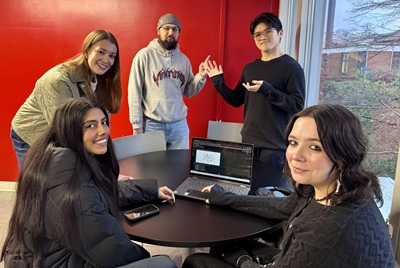
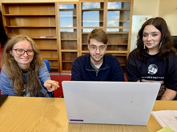
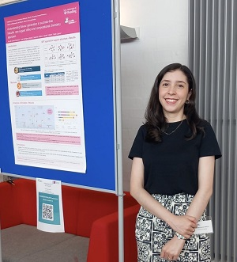
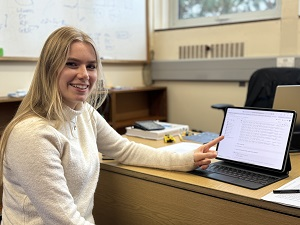
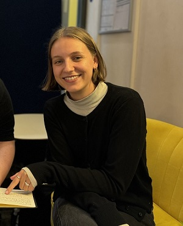
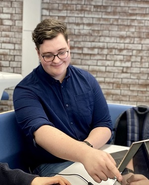
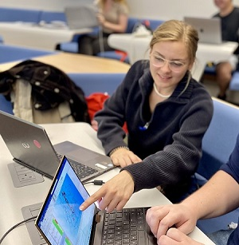

2025/2026 Final year Projects!
(Clockwise from bottom right)
Lucia Warner (MChem) is creating a physics-based model that generates peptides that can encapsulate molecules harmful to the environment.
Her model uses an MLIP in the conformational scoring function and Boltz2 for peptide binding energies.
Amrita Bansal (BSc) is studying how temperature-based token sampling affects the quality of answers generated by a AI agent for Drug Design.
She is using three different frontier models to score the answers generated by the agent, and thus she is also evaluating the frontier models'
ability to evaluate chemical information. Finally, she has developed an AI voice model to act as the audio interface for the agent.
Isabel Emma Dykstra (BSc) is studying how pharmacophore, structural and electrostatic similarities can be used to predict docking scores.
Starting with a target drug and enzyme pair, she has evaluated thousands of molecules to find the most compute-efficient way of identifying
bioactives for the target enzyme.
Patryk Ostrowski (BSc) is training GPT models to generate inhibitors for 4 enzymes in the dopamine metabolism pathway. Using datasets from Chembl,
he fine-tunes a foundation model to generate the inhibitors. His goal is to be able to predict the quality of the GPT model from properties of the
data set before training has even occurred.
Jimmy Ooi (BSc) has trained embedding models based on the BERT architecture using contrastive pairs of SMILES strings. The SMILES strings pairs
are classified as both active, both inactive, or one active and one inactive. He is evaluating these models against classical machine learning
classification models to see which are better at classifying enzyme inhibitors as active or not active.

Summer 2025 Undergraduate Research Group
From left to right: Jemima Miller (U of Reading, part 1 --> 2 BSc Chemistry) won an internship to conduct research on
the design and synthesis of drugs for Parkinson's disease (co-advised by Dr. Jess Kirwin-Gusthart). Arthur Sinclair-Loutit (U of
Oxford, part 1 --> part 2, BSc Biochemistry) is performing funded research into the design and synthesis of drugs for Parkinson's disease
(co-advised by Dr. Jess Kirwin-Gusthart). Lucia Warner (U of Reading, part 3 --> part 4 MChem) won a Royal Society of Chemistry
summer research bursary to conduct research into the use of AI methods in the chemistry of drug design.

Ana Gomez Betancur
Ana is a PhD student working jointly with Dr. Cafiero, FNS colleagues Stella Lignou, Julia Rodriguez Garcia and Physics Colleague
Gareth Tribello. Overall Ana is studying how inclusion of rare sugars affects the characteristics of biscuits. In the Cafiero group,
Ana is using DFT methods to study the Maillard reaction pathway for rare sugars, with a goal of being able to predict flavour compounds
that result from the baking of biscuits containing rare sugars.

Sophia Davey
Sophia is a work experience student who worked in the Cafiero group in Fall 2024. Sophia developed several types of machine learning models to
predict docking scores for molecules in the MAOB active site.

Marie Surbeck
Marie worked in the Cafiero group as part of the DAAD Rise program during the summer of 2024. Marie worked on developing a
generative-pre-trained model to create virtual screening libraries of molecules to inhibit the MAOB enzyme.

Josh Harle, MSc.
Josh earned his MSc in the Cafiero group in the 2023/2024 academic year, though he and Dr. Cafiero began working
together in 2022 when Josh won a Royal Society of Chemistry summer research bursary. Josh's Masters thesis covered
basis sets, active site size and amino acid residue capping for protein-ligand analysis, as well as three and four-body
interactions in protein-ligand binding.
- Josh's published work from our group.

Charlotte Schulze
Charlotte worked in the Cafiero group as part of the DAAD Rise program during the summer of 2023. Charlotte worked on three-body
interactions in protein-ligand binding, as well as drug molecule strain and desolvation.
- Charlotte's published work from our group.
This is the work of Dr. Mauricio Cafiero and may be used widely though atribution is appreciated.